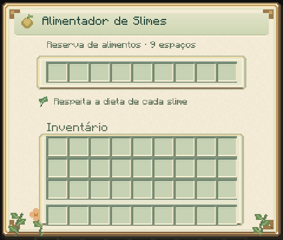

Cuidado e captura
Guia do mod · Dietas das espécies · Reprodução
Alimentação e necessidades
Use diretamente no slime um alimento de sua dieta. Uma refeição aceita consome um item em sobrevivência, reduz 20 de fome e recupera dez de energia. Ele precisa ter pelo menos 20 de fome e aguardar cinco segundos entre refeições.
Agache e interaja com a mão vazia para consultar as necessidades. Os valores vão de zero a 100: fome baixa é boa; energia, conforto e confiança altos são bons. Fome e recuperação de energia dependem do metabolismo e das condições do recinto.
Cuidador e confiança
O primeiro jogador que alimenta manualmente o slime se torna seu cuidador. Outros jogadores podem alimentá-lo, mas o vínculo e a confiança continuam pertencendo ao cuidador.
| Temperamento | Confiança por refeição do cuidador | Mínimo para capturar |
|---|---|---|
| Dócil | 20 | 20 |
| Neutro | 15 | 40 |
| Hostil | 10 | 70 |
Hostis deixam de selecionar o cuidador como alvo a partir de 20 de confiança. Ferir o próprio slime reduz 20 de confiança e pode provocar retaliação. O vínculo permite cuidado e captura. Com treinamento, o cuidador também pode ensinar ordens e organizar parceiros de trabalho. Veja vínculo e simbiose.
Recinto
Escolha piso e ambiente adequados à espécie. Bioma preferido, piso adequado, umidade e quantidade de vizinhos influenciam o conforto. Evite superlotação; Fogo sofre na água e Gelo é vulnerável ao fogo.
Use barreiras que contenham os saltos e feche o teto quando necessário. As tags de habitat podem ser ajustadas por datapacks.
Alimentador

O reservatório e a bandeja frontal ficam voltados para você ao colocar o bloco.
O alimentador tem nove espaços e aceita funis. A cada dois segundos, tenta alimentar um slime faminto com visão livre dentro de quatro blocos. Consome apenas alimentos compatíveis e respeita a recarga individual de refeição.
Ele mantém a alimentação, mas não cria cuidador nem aumenta confiança. Conquiste o vínculo manualmente antes de automatizar o recinto.

Cápsula
Use uma cápsula vazia em um slime de tamanho 1 ou 2, com:
- Confiança suficiente no cuidador.
- Pelo menos metade da vida e dez de energia.
- Ausência de combate ou dano recente por cinco segundos.
- Espaço livre de montarias, passageiros ou laços.
Somente o cuidador pode capturar e liberar. Use a cápsula ocupada sobre um piso sólido, com espaço livre e seco. Uma liberação recusada mantém o slime na cápsula. Chefes e lacaios não podem ser capturados.
A cápsula preserva identidade, genes, vida, idade, confiança e recargas. O indivíduo fica suspenso enquanto está dentro dela. Guarde os itens ocupados com cuidado: perdê-los torna o indivíduo inacessível pelo fluxo normal.
Capturas pertencem ao mundo em que foram feitas. Ao fazer backup, preserve o mundo inteiro, incluindo inventários e registros de captura. Veja instalação e backup.
Receitas
As receitas ficam no livro após obter uma bola de slime. Há uma rota de cápsula com um Núcleo de Slime e um vidro, além da receita inicial. Materiais e receitas.